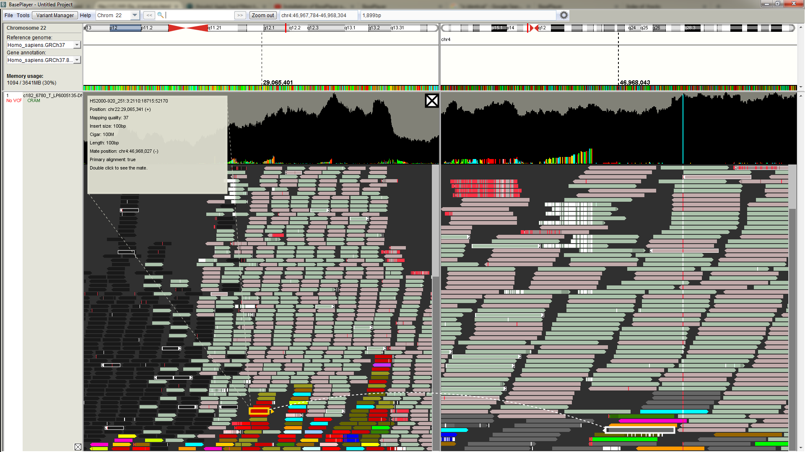
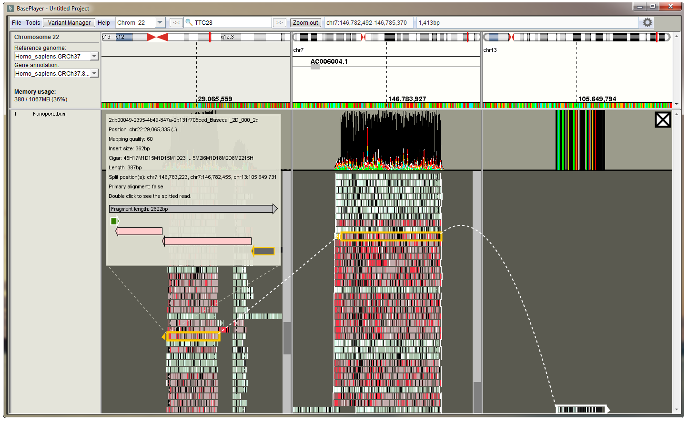

BasePlayer manual
Variant Analysis
Variant quality Filtering
Variant quality filtering is operated in Variant Manager.
Basic filters
Use SNVs tab of the Variant Manager to apply basic filtering for SNVs and indels. These values are read from the opened VCF files and can be used interactively with the variant visualization.
The basic filters include:
Min. quality score
- This value corresponds to the QUAL field of the VCF file.
Min. genotype quality score
- This value corresponds to the GQ field of the VCF file.
Min. coverage
- This value corresponds to the DP field (or AD) of the VCF file.
Max. coverage
- This value corresponds to the DP field (or AD) of the VCF file.
Min/max allelic fraction
- This value corresponds to the AD field of the VCF file.
Indel filtering
To use separate quality filters for indels, go to Indels tab of Variant Manager and check "Use indel specific filters".
If you are using controls, right click the control track and select "Overlap indels" to exclude all overlapping indels found in the control file.
We offer repeat region BED files for GRCh37 in https://baseplayer.fi/tracks/repeats_GRCh37/. You can open these files for your project and select "Subtract" from the track options to exclude indels in microsatellite regions.
Advanced filters
If your VCF files have been created by GATK's HaplotypeCaller, you have additional quality parameters for variant filtering. See this post for more information about the parameters and suggested threshold values for quality filtering: https://gatkforums.broadinstitute.org/gatk/discussion/2806/howto-apply-hard-filters-to-a-call-setAccess additional filter window by clicking the "Min. quality score:" text at the Variant Manager SNVs or Indels tabs.
In the picture, suggested values from the above link have been set. Note: FS value have less than "<" symbol changed to more than ">", which means that all variants having FS value greater than (60 in this case), is excluded.
Familial
Inheritance patterns
Download "Ashkenazim Trio" example data for inheritance analyses (GRCh37) by using links below:(take both vcf.gz and vcf.gz.tbi files for each sample)
Son VCF, Father VCF, Mother VCF
for read visualization, the BAM files are available at:
(take both sorted.bam and sorted.bam.bai files)
Son BAM, Father BAM, Mother BAM
Find more information about the samples here https://www.nature.com/articles/sdata201625
You can use compare panel to compare variants between family members or inheritance panel for more specified results (requires at least one sample to be set as an affected).
See the video for example analysis at our Youtube channel: "Familial variant study with BasePlayer"
Suggested tracks for exome analysis:
mcap_v1_0_forBP.bed.gz in https://baseplayer.fi/tracks/
Suggested controls for exome analysis:
gnomAD_exomes_ALL_GRCh37.vcf.gz in https://baseplayer.fi/controls/
Suggested tracks for whole-genome analysis:
Encode_Combined_Gm12878_H1hesc_Helas3_Hepg2_Huvec_K562.bed.gz in https://baseplayer.fi/tracks/
GERP_hg19.bw in https://baseplayer.fi/tracks/
Mappability_1000Genomes_pilot_mask.bed.gz in https://baseplayer.fi/tracks/
TFbinding_sites_SELEX_GRCh37.bed.gz in https://baseplayer.fi/tracks/
Suggested controls for whole-genome analysis:
gnomAD_genomes_ALL_GRCh37.vcf.gz in https://baseplayer.fi/controls/
Somatic
In somatic studies you can use the filters, tracks and comparison panel as in familial cases.
See example video of a whole-genome somatic variant analysis at our Youtube channel: "Somatic cluster analysis demonstration with BasePlayer"
Read analysis
Read analysis requires aligned BAM or CRAM files with index.
Variant validation
Variant quality metrics in VCF files are assessed by the used variant caller. Although the false positive rates of variant calls have decreased as methods have improved, read level inspection of variant calls and flanking regions are required in most cases. The integrated variant analysis and visualization in BasePlayer enables rapid workflow for variant validation - double-clicking the specific sample in the result table zooms in to the variant locus and expands the sample track. Reads appear on the sample track. Read level zoom enables user to inspect qualities, orientation, and mismatch rates of the overlapping and surrounding reads. In addition, the reference sequence and annotation tracks, such as repeat masker and mappability track, provide additional information about the variant calls.

Structural variant analysis
Structural variants break points can be analyzed by inspecting discordant and splitted reads at the break point locus. BasePlayer groups discordant reads at the bottom to facilitate the analysis. The colors of the reads corresponds to either different kind of structural variant or chromosome color of the discordant read pair (in case read pairs have been mapped in different chromosomes). Concordantly mapped read pairs are colored as light green and red (forward and reverse strand).
{kind=link}
On the above image, there is a LINE1 element at the left side of the left panel. Reads appear as dark, as the mapping quality is lower than set in the settings.
Colorful reads at adjacent to dark reads represents discordant reads, whose pair is aligned to different chromosome (color is determined by the pair's chromosome).
Double click discordant read to split the screen between the different chromosomes. You can split the screen as many times as
the monitor width allows.
At the right panel, there is a visible break point (mismatches in reads and in the coverage track).
Click read to view more information about the read.
RNA data
To be added...Long read analysis (3rd generation sequencing)
Thousands of base pairs long reads are non-trivial to visualize, as a single read can span multiple genomic breakpoints, or multiple exons in the case of RNA data. BasePlayer recognizes long-read data, and makes a reasonable effort to present it properly. For instance, the researcher can divide the main screen between distinct genomic loci by double clicking a read that has been mapped to multiple locations (figure below). A demonstration video on how to visualize long-read data in BasePlayer can be viewed at the BasePlayer Youtube channel: "Third-generation sequencing data visualization with BasePlayer"
{kind=link}
Three split views of the long read are shown, tracking the split mappings for a single long read. An inset info panel shows information on the selected read and a schematic illustration of split read orientations.
Transcription Factor binding sites
BasePlayer has a built in set of transcription factor position specific scoring matrices (PSSMs), obtained from Jaspar database and
https://www.nature.com/articles/nature15518.
If you are analysin the data with GRCh37, you can download aligned motifs from https://baseplayer.fi/tracks/ (TFbinding_sites_SELEX_GRCh37.bed.gz).
The BED file has the TF name in the "Name" field, which allows BasePlayer to recognize the correct PSSM for correct alignment and visualize it in place at the region track.
Option 1: download aligned motifs from Ensembl BioMart
Go to https://www.ensembl.org/ (make sure you go to correct version of the reference genome) and click BioMart from the header of the page.
Choose database -> Ensembl Regulation -> Choose dataset -> Human binding motifs.
Click "Attributes" and check the "Strand" checkbox.
Export the file as compresssed file and leave the TSV selected. Press "GO".
Open biomart file in BED converter and select "Name" for the Binding matrix column, and
chromosome, start,end and strand as in the original file header. Press convert.
Uncheck "zero based" from the track settings.
Option 2 (requires linux environment, python, bgzip and tabix): align and add motifs manually
You can add your own motifs to BasePlayer/additions/motifs folder. Create a .txt file and add the desired PSSMs in the file. Use the jaspar_pfm_add.txt as a template.
Motifs will be loaded to memory as the BasePlayer starts.
Use for example MOODS algorithm to align your motifs to the reference genome.
Conver MOODS output to BED file with this python script
Use following bash command:
cat moods_output.txt | python moods2bed.py | bgzip -c > output.bed.gz
After conversion create the tabix index for the file:
tabix -p bed output_bed.gz
The file can now be opened as a BasePlayer track and the motifs are visualized as a sequence logos.